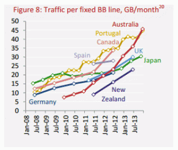

The latest cost-benefit analysis of various Australian broadband proposals is out. It's part of a report from an inquiry chaired by former Victorian Treasury head Mike Vertigan.
And it says in essence that Australia's expected growth in demand for bandwidth is big enough to make the NBN viable, but small enough to make the government's alternative look better.
I would have expected to hear the report's authors out there defending it, but Mike Vertigan has never been keen to put himself forward in the public debate. So today much of the media I saw has been dominated by critics, and they've mostly been saying that a useful cost-benefit analysis is impossible, so we should just build the NBN. Paul Budde was making the claim this morning on ABC Radio, and lesser-known experts such as Sydney Uni's Kai Riemer have been saying the same thing.
This claim – that we can't usefully analyse the NBN's costs and benefits – is hooey.
We can't do a precise cost-benefit analysis, given how much Internet use is likely to change over the next decade or two. And whatever analysis we do should be up-front about how much guesswork is involved. But cost-benefit analyses are not just helpful; they're also inevitable. Indeed, everyone who says "we should just build it" actually is doing a cost-benefit analysis. Typically they're just doing a really sloppy cost-benefit analysis in their head, and setting their median estimate of the benefits at, approximately, Unimaginably Huge.
And Unimaginably Huge is almost certainly an overstatement.
“We can’t begin to imagine what people could do with upload speeds on an industrial scale,” Riemer told News Limited.
But of course we can begin to imagine that. Here's how.
Places like Japan and South Korea have had high-speed broadband in place, with high upload speeds, for years now. And as the report's demand projections document sets out, nothing magical has happened.

At right is a graph showing broadband traffic in Australia, Japan and a few other countries. In the finest traditions of the Australian Internet, I stole it from the Vertigan report. Sorry, Mike.
You'll notice that Japan, which has had widespread fast broadband for a decade now, is not seeing an explosion in demand. Instead, Japanese demand has been growing quite slowly. The Japanese are not alone. To quote Andrew Odlyzko, perhaps the world's leading analyst of Internet traffic: "There have been many warnings of an impending 'exaflood' that would swamp networks. They have not taken place, and instead we have seen a deceleration in wireline Internet traffic growth rates."
If high-speed broadband was ready to work some new magic, we should already be able to see it at work in Japan - and South Korea, and Hong Kong, all places where high-speed broadband has been commonplace for the better part of a decade. We should be able to its benefits in Australia, too, because like most other developed countries we have had high-speed broadband for many years – not everywhere, but certainly between CBDs, many inner-city areas, and the universities. If video-conferencing is poised to explode, it should already be happening between bandwidth-rich Collins Street lawyers and their bandwidth-rich Macquarie Street clients. As William Gibson wrote long ago: “the future is here; it is just unevenly distributed”.
So Riemer's claim that "we can’t begin to imagine" the technological future is a half-truth at best.
As it happens, Australian traffic has been exploding recently. But it's not because of any revolutionary new productivity-driving breakthroughs. It's down to video consumption: ABC iView, Apple TV, high-def YouTube videos, people Chromecasting Game of Thrones, and so on. (It's essentially the same story in Hong Kong, where per-capita demand is around 100GB/month - too big to fit on this graph.)
Malcolm Turnbull has been lampooned for claiming that broadband demand is mostly about movies and TV. But if you restrict your gaze to recent demand for raw bandwidth, he's right.
And hardly anyone wants to say we should build the NBN so we can watch True Detectives or remastered Star Trek episodes, fun though that may be. So supporters keep talking about all the other fantastic advancements we'll miss out on if we don't build it.
Trouble is, most of the innovations we have come up with recently don't use all that much bandwidth. Facebook and LinkedIn and Instagram are only medium-bandwidth even at their most intensive. Twitter and smart electricity grids are low-bandwidth. Networked games like Halo 3 use surprisingly little bandwidth too, with local hardware doing most of the work. And beyond a certain point, the speed with which you see Web pages has little to do with bandwidth; it's mostly about server responsiveness and network latency.
Most projected e-health applications, including your latest x-rays, won't use that much bandwidth either. Even fairly decent video-conferencing for education and medical consultations and business meetings uses perhaps 2 megabits per second, according to the demand document. To the extent that something is limiting growth in the use of such technologies, that something is generally not bandwidth.
The real policy problem with the NBN is that high-speed broadband just isn't that much of a revolution. And to justify the cost of universal provision, it needs to be.
Addendum: Note that it is possible to believe that the NBN is sub-optimal policy without believing the hyperbole that it is a disastrous white elephant. The Vertigan report explicitly finds that the NBN would have delivered benefits of around $2 billion to the economy. That's less than the unsubsidised and government-preferred alternatives, but it doesn't make the NBN a boondoggle, either.
Addendum 2: A long time ago I had a bit to do with Mike Vertigan. My impression then was that he was one of the best public servants going around. Others apparently agree, including at least one who disagrees with his report's conclusions.
Addendum 3: Joshua Gans, always interesting on broadband issues, approves of the report's willingness-to-pay methodology while highlighting some problems with applying it to likely future broadband demand.
A few comments.
Japan hasn't seen the increase in demand people were expecting? Err Japan is not exactly going through a golden age of economic growth.
what is your evidence that most of the demand in OZ is because of movies TV shows etc?
Cost Benefit analysis is problematic because of the assumptions made In this case the unstated assumption is about the quality of the copper network. If Copper is okay why has Telstra for sometime been replacing degraded copper systems they actually know about with fibre optic cable.
Not Trampis, some comments on your comments:
* Japan is indeed in slow growth. But broadband usage levels are not being driven primarily by economic growth; they're being driven by changes in technology and its use, and by increasing penetration of households and businesses.
* The primacy of video as a traffic driver has been uncontroversial in Australian telecommunications circles for many years. See for instance page 22 of the Communications Chambers demand projections:
"The importance of video as a traffic driver is well known. Cisco’s Virtual Networking Index estimates it is 74% of consumer traffic in Australia."
* Cost-benefit analysis always depends on decent underlying assumptions; if an assumption in one analysis is bad, that does not make all analysis pointless.
But note that not building the NBN does not leave us entirely reliant on the copper network; the Vertigan report models not only the no-buildout case but also an unsubsidised buildout (where new facilities are built wherever it's economic) and the government's preferred multi-technology mix (MTM). And of course we already have a bunch of non-copper facilities in place.
Thanks for that David.
I would have thought if you are going to argue that the Present government's plan is better than the previous government's then you had to know about the state of the copper network going into homes.
I searched for the information and didn't find it.
IF a lot of it is corroding then the benefits blow up in smoke.
On Cost Benefit analysis I wasn't saying they are useless but only as good as the assumptions made on both sides of the equation.
The cost benefit analysis is worthless, because the usage forecasts are ridiculous.
See here for a reasonably good first look.
For example, usage from now until 2023 is forecast to grow at about 4% p.a.
Just eyeballing the graph above, i.e. the one labelled "Figure 8: Traffic per fixed BB line", actual growth is something like 100% p.a.
Why the discrepancy? The forecast document waves it away, saying:
But that's false. Video compression is not constantly improving. Even with infinite computing power, it's not possible to get much better compression than we've already got. The authors are just making stuff up.
Looks to me like the whole thing was done with a conclusion in mind (Turnbull NBN=good, Labor NBN=bad), and the rest is just space-filling bullshit that's plausible looking to people who don't understand the details.
Thanks David,
Interesting debate. SJ's last point looks quite solid. Your thoughts?
Have to agree with Homer and SJ on this, projections using current data should include growth over the last 70 years, since inception.
The idea that the future can be determined by the past just doesn't hold up.
SJ - assumptions tweaked to make government policy look good and the opposition's bad, as part of an independent review where the Terms of Reference and personnel are selected by the government? I am shocked, shocked I tell you.
I am no great fan of the process that led to the decison to build the NBN as FTTH, but people are entitled to be a bit cynical about this exercise too.
It is that really correct SJ? I was under the impression that most people now use pretty low compression rates due to the speed at which things unpack (see e.g., http://www.linuxjournal.com/article/8051 to see how different things can be) and not necessarily because more efficient algorithms are not available. I'm pretty ignorant on how video compression algorithms work, although I do use (and program occasionally) parallel processing stuff. In this respect, if these algorithms can parallelized to run on GPUs (they already use multiple processors in the standard versions), then you would expect enormous speedups for pretty minimal outlays (e.g., at present, a graphics card now worth a few hundred dollars). If everyone had these in their computers, then you could then use far heavier compression formats and so we wouldn't have to send massive files around.
Kudos to SJ for reading the report. I don't think the usage figures are ridiculous. I do think that they look low, and that the statements on compression look optimistic. The report's authors are better qualified than most to make that judgment, but more research looks justified. I am also aware that I keep being surprised by how much new compression people keep squeezing out of the algorithms. (Of course, some of the improvement is due to adoption of existing algorithms which better CPUs can actually work with at acceptable speeds.) The report doesn't quite wave the compression question away; for instance, it has a graph which I hadn't seen before illustrating the history of improvements in compression.
The report also has a sensitivity analysis which says, essentially, that the assumptions about bandwidth demand have to be way out before the NBN is a better deal than the government's alternative.
But even if the report's authors are "making stuff up" - which I doubt - they are certainly not delivering space-filling bullshit. Quite the opposite. They are addressing exactly the sort of questions that need to be addressed, and which have been addressed all too rarely in the broadband debate. In that sense the report illustrates very well why public cost-benefit studies are such a good idea: they allow everyone to clarify what they are arguing about, and where the data is uncertain, and they create an agenda for finding better data.
More generally, the point remains that "more movies and TV shows delivered by wire" is a fairly shaky foundation for a huge telecommunications subsidy.
And it's not as if the NBN is the only way we'll ever get high-speed broadband; the architecture of the Internet makes it relatively amenable to incremental build-out by multiple operators and multiple technologies. We do not need to choose between a monolithic broadband network and dial-up.
As to SJ's final point ...
A cost-benefit analysis on the NBN was always likely to make it look like a worse deal than a more staggered approach. The NBN is a monolithic answer to a problem that is well-suited to an incremental solution, and at a policy level that contest generally only ends one way, even if some people prefer Huge New Projects to Piecemeal But Effective Imcremental Improvement.
But beyond that, it really does not look to me that the report was written with a conclusion in mind. If it had been written with a (pro-Coalition) conclusion in mind, I doubt it would have found that the NBN delivers a $2 billion net benefit. I found that conclusion illuminating. Turnbull's "multi-technology mix" delivers more, but both are driven by defensible public policy choices and are sub-optimal compared to a no-subsidies approach.
I'm actually kind of surprised that NBN supporters haven't painted the report as an endorsement of the NBN. The ALP calls it "tainted" and "flawed", and the Greens say it was "the report Turnbull wanted". You might equally say that it blows many of the Coalition's claims out of the water and makes some of the more extreme critics look like mugs. But now it's cast in the public mind as That Expert Report Which Proves The NBN's A Boondoggle.
One wider comment on SJ's final point.
One aim of good policy processes is to get material out there is such a way that it doesn't matter what your motives are. Once an analysis is published, people can read it and decide whether it's bullshit or not, full of bad numbers or not, incomplete or not. At that point, it shouldn't much matter whether the authors are Methodists, communists, or philatelists.
If someone detects "space-filling bullshit", they can explain why it's space-filling bullshit and we'll all know a bit more. This is good process, and there should be more of it.
I am really, truly sick of reading uninformed BS about people' motives.
two points 1) A commission's recommendation get's more publicity than those of critics. you are showing terrible political naivety 2) The recommendation relies exclusively on the assumption the copper network between the fibre optic and the house is up to spend ( pun intended). If no-one can answer that question then the recommendation isn't worth a squirt!
Have always felt that the main use that the NBN will be put to is downloading movies ,and 'piracy ' . Feel a bit annoyed at the idea that the end result of the subsidies to this nation building utopia may simply result in all of us having to pitch in towards the costs of ISPs policing , game of thrones downloads,regardless.
I've always been a bit skeptical of e-health, but Nick Ross is saying that no e-health providers will rely on copper. The CBA doesn't address the running costs and probable poor reliability of the existing copper network. Also it's not about the download speed, it's the upload speed and latency (FTTN latency is actually worse than ADSL) that will bring big benefits to business.
The CBA doesn't address upload speeds at all. So, forget e-Health (THE business case for the NBN-we'll spend 1 trillion on health in the next decade). Also, aged care-if we had the original 'pure play' NBN, we wouldn't have to build all these facilities for the olds to live in. Last, crappy upload speeds cruel the NBN for huge data, CGI and the increasing numbers of digital industries and academic researchers working with extremely large files. So forget decentralisation from the cities to regional centres. More 'Little Kowloon' living in Sydney, from Hornsby to Hurstville!
Also, (not a complete list), there is no mention of the FttN cabinets, which must be powered. Depending on the number of these, are we really going to build more coal powered gen plants to run these? Oh, and council approval will be required-to situate EACH one of these on someone's lawn or verge. When is this 'MTM' NBN scheduled to be completed, again?
I suspect that only a small percentage of 'power users' will exploit the bandwidth available from a 'pure play NBN' initially. But this bandwidth will be used, in the future. We just don't know how. BS? Look at Korea, which became THE producer for video games (a bigger industry than porn internationally). If Turnbull were there, he would have told 'em that 'dial-up' was more than enough!
Ingrate.
Questions A) is there any real reason why the fiber can not, as needed, be extended to the node, in the future? B) is there any physical reason why those who need really high speeds, for commercial purposes, can not pay for the extra bit now? C) is there any reason why it should be a monopoly , apart from cross-subsidy? And Is my memory correct in thinking that the roots of the NBN had as much to do with Telstras attitude re its monopoly over the existing infrastructure, as it did with the merits of FTTN?
A) This analysis from last year says the upgrade cost would be $21bn - so why not do it right the first time? FTTN speeds are adequate now, but would push a FTTP upgrade further into the future. B) Absolutely, businesses and schools can already get fibre from the various existing providers, but it costs a lot more and you can't rely on being able to get it everywhere. It's like saying rich people can afford private medical care, there's no need for public hospitals, the poor can just go to the GP. C) See Foxtel vs Optus cable in the '90s - last mile wiring is a natural monopoly. Singapore's NBN has the monopoly slightly lower, so there is another network layer in-between the fibre owner and the ISP, which is a model that has merits.
E-health starts with the same old puzzle: if it's poised to provide Australia with huge benefits, we should be seeing similar benefits already in places like Japan and South Korea which have had broadband for years. And we're not, yet.
Why not? Because within e-health, telehealth is a huge panoply of measures, a few requiring fast broadband and many requiring very little indeed, and most of them suffer from the same problem that we see all through public policy. And it's this.
Much of what we can imagine will not actually happen.
And that's for reasons which are a heady mix of sociology, anthropology, technology, economics and luck.
This has been particularly true of health. When you speak to people who work in the field, you hear a lot of excitement about the possibilities but also a huge amount of frustration about the practical difficulties. You're dealing with a system that still cannot email you your own medical records. You're dealing with patients who can't be relied on to take the right pills seven days in a row, let alone co-operate in remote monitoring arrangements. It drives people crazy, but that's life.
When people like Nick Ross* start declaring that the NBN is going to revolutionise all this ... well, it's worth taking a step back.
We can imagine broadband helping to solve various medical challenges. But you wouldn't want to bet on how much of that imagining will turn out to be right.
40 years ago, I used to read constantly about a world where supersonic flight was commonplace. It never happened. Concorde turned out to be more infrastructure than anyone could afford. High-speed broadband may be a little like that in the short term; the Vertigan report essentially makes that argument.
The Internet will be important to raising productivity in health; of that I have no doubt. But there's no need too put an entire monolithic network in place before we start finding the solutions. We can go step-by-step.
That's what we did in air transport in the 1970s. We didn't decide to convert the whole world's international air fleet to travel at Mach 2.1. We implemented a variety of solutions, and the sweet sport turned out to be subsonic.
By next year 10 per cent of the population will be connected to the newly-built NBN fibre, and many more will have HFC or reliable ADSL connections. What's more, most of the larger health facilities have plenty of bandwidth. If there are powerful new e-health solutions to be found that require huge bandwidth, this should be enough to find them.
* Nick Ross's writings are actually an object lesson in how not to approach the NBN issue. Bruce Belsham at ABC management and Jonathan Holmes at Media Watch both decided last year that Nick Ross's passion had taken him from analysis to advocacy, and called him on some of his wilder writing. They were right to make that judgement.
But perhaps a bigger problem for Nick Ross, and for very many others like him, is that their enthusiasm for the technology is not matched by an understanding of what change entails and how it should happen in a social and economic system given the structures involved. As infectious diseases specialist Trent Yarwood has pointed out, Ross is not making the connections between the universe of future possibilities and the real world.
John, alternative responses:
A) No – and by doing it later we leave ourselves time to learn more about the future.
B) If you're in the Melbourne CBD, extra bandwidth is a phone call away. In Mudgee, not so much. If you want universal access, you need to subsidise some parts of the network.
C) No. What we need is a policy that does the maximum to encourage competition between the various modes of broadband delivery. The fixed-wire last mile may be a natural monopoly within a given area, but as Joshua Gans has noted, there is no reason why every area has to be serviced by the same company. See also Michael Porter (the Australian one) on how broadband is suited to competition between delivery modes.
D) Your memory is correct. Many figures in the ALP, including Stephen Conroy and Lindsay Tanner, saw Telstra's aggressive defence of its network from the mid-1990s as a huge problem. They were right, in my view; they just jumped to a less-than-optimal solution.
Thanks Re D , what could be a more optimal solution?
David,
you have yet to address my original question which to my mind is the most important. Could you please?
John, I'm not even going to try, except to say it would have involved more competition, better use of pre-existing assets, a lower spend - and no assumption that you have to roll out a single monolithic ultra-high capacity network across the country.
It has always seemed to me that the obsession with delivering very high speed NBN to a all homes, was a odd 'must have'... For example the community I live in: is isolated (100ks to nearest Hub), about 600 dwellings, median income is about $ 30 K (doubt that many could pay for the actual service) and with no even remotely obvious need of it (for every home) at all.
Not Trampis, I presume the question in question is: "If Copper is okay why has Telstra for sometime been replacing degraded copper systems they actually know about with fibre optic cable."
"Copper" (lines, joints etc) in good condition is fine. Copper in bad condition should be replaced. The process you're describing sounds OK to me. I may be missing something..
I'm not opposing fibre. I'm arguing that the current state of Australian telecommunications facilities is not such as to demand a full government-mandated replacement of the entire system by a new 100Mbps+ semi-monopoly fibre network.
Ultimately our aim should be to have institutional and regulatory arrangements where people don't need to have politicised public discussions about the technical condition of the infrastructure – any more than we now have discussions about the state and future direction of the banks' payments solutions or the trucks that deliver packages to your door.
When non-experts see it as important to have these technical discussions, we're doing it wrong.
[Nicely said! NG using Admin privileges in the absence of any further 'reply' facility.]
C) The US FCC has tried to encourage competition between different modes of last-mile, rather than opening up the last-mile infrastructure to regulated access and it has been an abject failure. All the hoo-haa about net neutrality in the US is because if Comcast decides to fuck over Netflix, you generally have no other option - ADSL is slower, and that's only available from your incumbent telco too. And Comcast and Verizon have also entered into no-compete agreements between cable and wireless, so there goes even that aspect of possible competition.
I'll grant that locally managed rollouts might be better, see how many US cities are trying to roll out their own fibre networks, but in Australia s51(v) of the constitution says that postal, telephonic and like services are a commonwealth responsibility, and so we can't really go down that path here.
James, s51 leaves it perfectly open to the Commonwealth to pass laws facilitating local roll-outs of any sort, including roll-outs overseen by local government.
Learn from the US system, but be wary of taking too many lessons from it until you've understood the institutional, regulatory and business context very well. For instance, a lot of US cable was originally rolled out in exchange for monopoly rights.
s51 isn't just about the future, but also the past, which has resulted in a national incumbent telco. Which means that we may as well manage it nationally to negotiate access to the ducts (already done). Councils used to run their own power stations and electricity networks too, but they got subsumed by the state energy commissions.
Those monopoly rights included provision for local access TV channels, it's a pity they weren't updated for local access internet too, it would save the overbuild with municipal fibre. No one's really talked about the proposed transfer of HFC from Foxtel to NBNco either, that's taking even longer than the FTTN trials have (which so far have used spare copper pairs). HFC at least is a reasonable "faster, cheaper" alternative to FTTP, having been built recently and in good condition, unlike FTTN given Australia's copper.
Nononono.
We do not know the quality of the copper network between the fibre optic and the house.
That being the case no-one can seriously make a case there is a benefit.
That Telstra is not replacing copper with copper merely confirms that copper is not a L/T asset.
Yes, duct access and the HFC are two under-considered aspects of the system.
Right, so are you blaming Conroy/ALP here for launching the NBN concept? A concept that was already promulgated in other countries? One they refined several times, from Telstra's FTTN proposal (which was rejected), their first attempt at third-party FTTN which they rejected due to the infeasibility of taking ownership of Telstra's fibre, to the second FTTP/wireless/satellite NBN. Or should we be blaming Tony Abbott for ordering Turnbull to demolish the NBN?
I'm not blaming anyone in the comment above, and my personal admiration for Conroy is on the record.
Thus no-one knows what condition the copper network is in between the fibre optic and the house. Hence how could anyone say there is any benefit until that is known?
Any comment on this, David?
http://www.smh.com.au/it-pro/government-it/nbn-fibre-rollout-was-going-to-be-cheaper-sooner-pilot-results-show-20140905-10cgdg.html
It is a reasonable rule of thumb that you can safely dismiss any analysis of the NBN that spends its time discussing bandwidth as uninformed hackery or propaganda. Technologically, there are three technical elements to the NBN benefits:
1. Latency/Jitter—the tele-* applications have a reasonably modest bandwidth requirement, but are extremely sensitive to latency and jitter; however, it is these (not TV-ondemand, or movie downloads) that will trigger economy-wide transformations.
2. Universality—as with the road-, power-, and telephony-networks, all but a tiny percentage of the benefits accrue from network effects. The society-wide transformations can't be projected from current behaviour. They will only become conceivable to the extent society can assume low-latency moderate-bandwidth network infrastructure.
3. Pervasiveness—the lives of homo sapien narratio are radically changed when new communication media become reflexively available. If you want to plot a graph that is relevant to the NBN, try plotting the number of phone calls established over mobile networks over the past 30 years. If you want to get some idea of the scale of societal and economic change universal low-latency network represents, look at the impact of mobile phones on the lives of those young enough to have learned reflexive dependence on them.
The NBN (or something like it) represents a necessary precondition for a reflexive dependence on low-latency connections to anyone, anywhere. "Unimaginably Huge" is a reasonable starting point for discussing the implications of such a future—glib lines and irrelevant comparisons notwithstanding.
Andrae
You nailed it.
I agree with David here, but think the point can be made more simply.
The biggest obstacle to transforming health in line with the new possibilities is rigid workplace routines and demarcations - which are the product of 'hard' politically policed occupational regulation and all manner of 'soft' cultural issues relating to existing professional practice. Without attention to these things the idea of the NBN being transformative in medicine is a kind of cargo-cult.
It's funny isn't it how fanged up the business community can be over rigid demarcations amongst the lower classes, but how blind they are to the same issue elsewhere. And I'm not accusing them of having a vested interest in demarcations in health - their overwhelming vested interest is in a similar degree of flexibility as they seek in employment law.
The costs imposed by rigidities are the widely born costs of users, when the costs of rigidities in the labour market are directly imposed on employers in the first instance. So there's a direct line of self-interest in the one case, and the self-interest in the other is more diffuse and less concentrated. So in the absence of the requisite imagination, there's a compelling 'politics' of one, and nothing much to get in the way of the sellers of professional labour in the other. Sad.
In my community there are people who can not afford root canal treatments for abscessed teeth, they have to wait for ages for funded treatments. ( and it can literally kill you - somebody died of septicemia from a untreated abscess just the other day). Think that that adequate dental treatment for the poor, is a more important public than a rolls royce in every driveway.
sorry a more important public need than a rolls royce in every driveway.